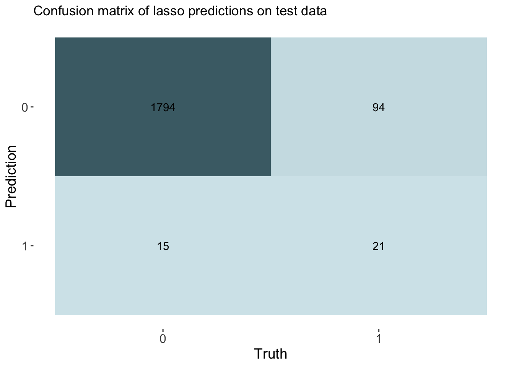
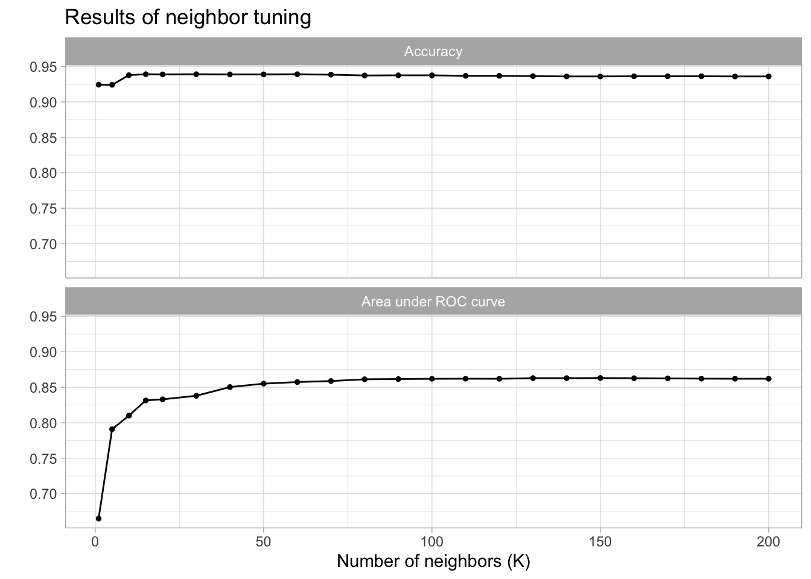
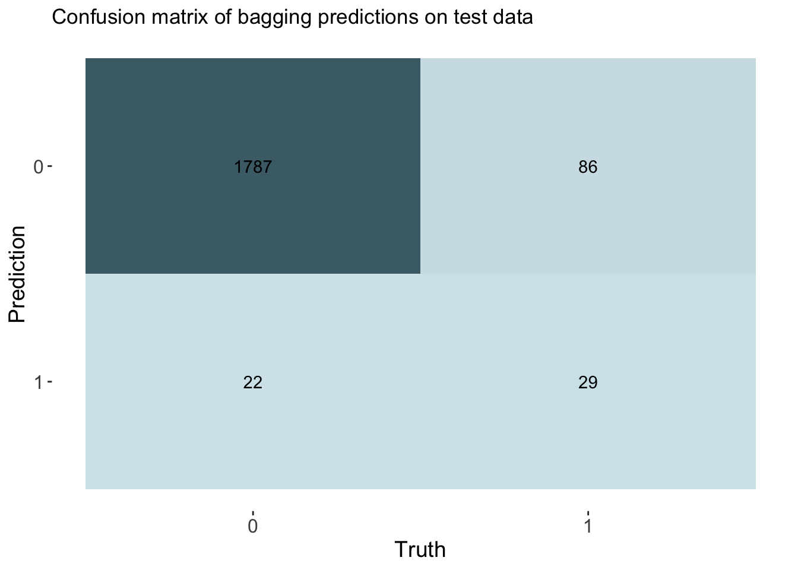
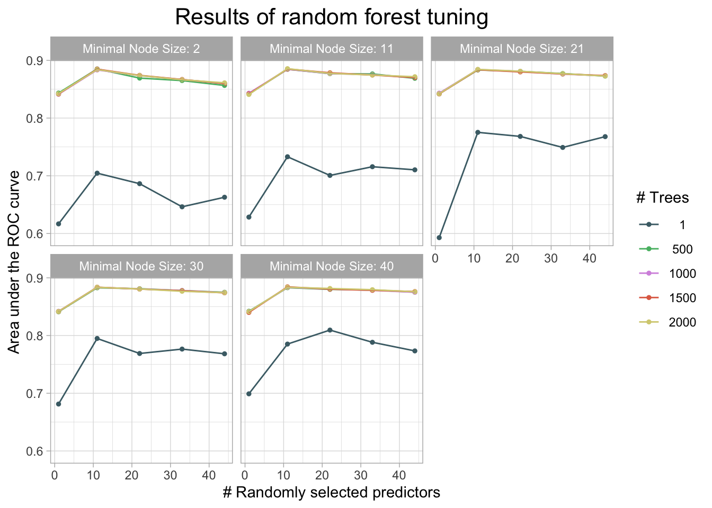
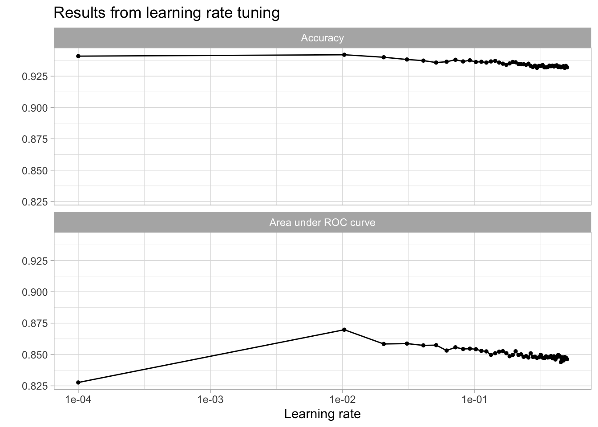
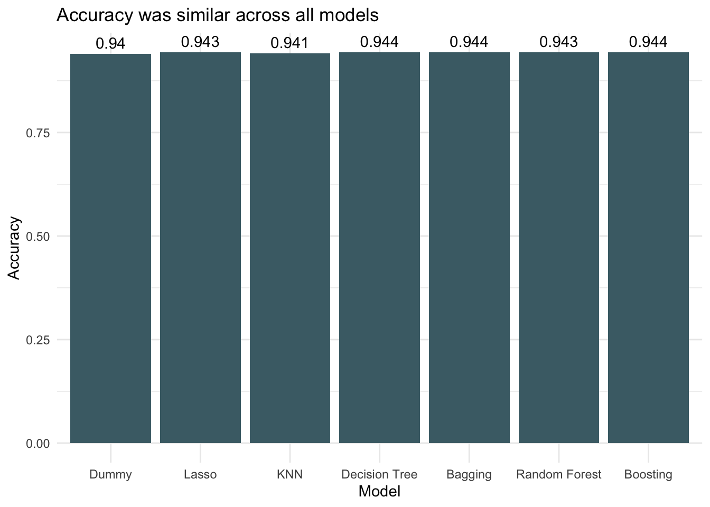
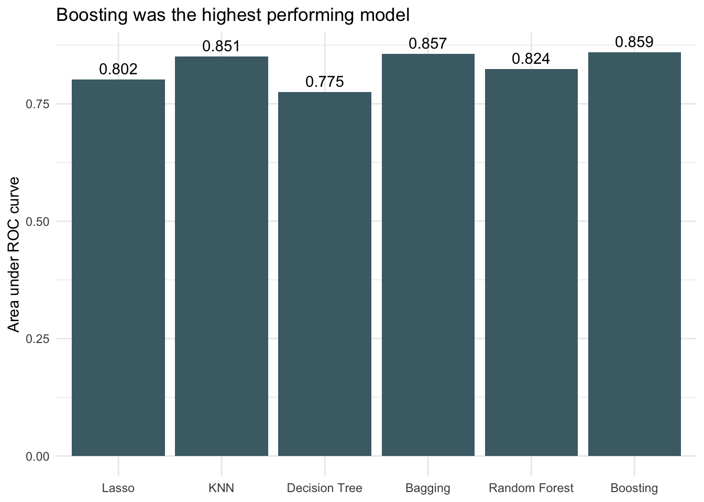
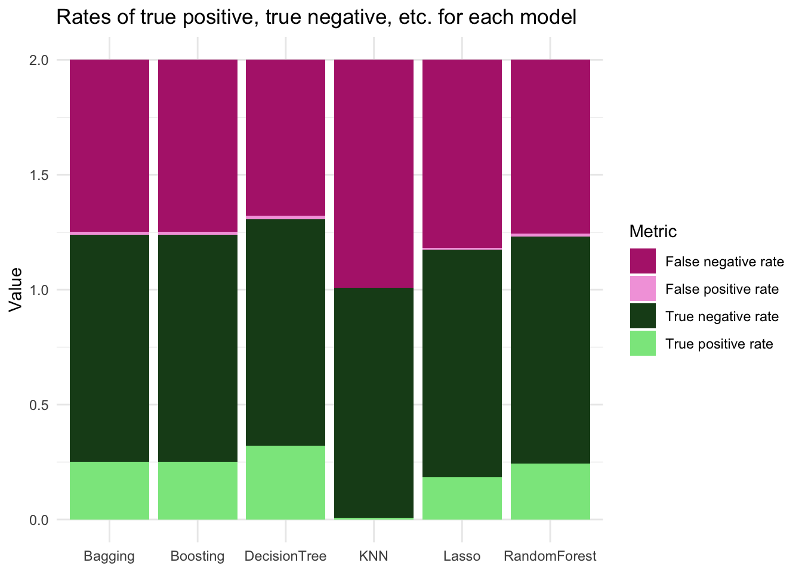

| SpecCode | GenusSpecies | BodyShapeI | DemersPelag | AirBreathing | DepthRangeShallow | DepthRangeDeep | LongevityWild | Length | Weight | Importance | PriceCateg | MainCatchingMethod | UsedforAquaculture | GameFish | Dangerous | Electrogenic | Neritic | SupraLittoralZone | Saltmarshes | LittoralZone | TidePools | Intertidal | SubLittoral | Caves | Oceanic | Epipelagic | Mesopelagic | Bathypelagic | Abyssopelagic | Hadopelagic | Estuaries | Mangroves | MarshesSwamps | CaveAnchialine | Stream | Lakes | Cave | Cave2 | FeedingType | Parasitism | Solitary | Symbiosis | Symphorism | Commensalism | Mutualism | Epiphytic | Schooling | Shoaling | Benthic | Sessile | Mobile | Demersal | Endofauna | Pelagic | Megabenthos | Macrobenthos | Meiobenthos | SoftBottom | Sand | Coarse | Fine | Level | Sloping | Silt | Mud | Ooze | Detritus | Organic | HardBottom | Rocky | Rubble | Gravel | SexualAttributes | SexMorphology | SexColors | StrikingFeatures | Forehead | OperculumPresent | TypeofEyes | TypeofMouth | PosofMouth | MandibleTeeth | MaxillaTeeth | VomerineTeeth | Palatine | PharyngealTeeth | TeethonTongue | TypeofScales | Scutes | Keels | HorStripesTTI | HorStripesTTII | VerStripesTTI | VerStripesTTII | VerStripesTTIII | DiaStripesTTI | DiaStripesTTII | DiaStripesTTIII | CurStripesTTI | CurStripesTTII | CurStripesTTIII | SpotsTTI | SpotsTTII | SpotsTTIII | DorsalFinI | DorsalFinII | CaudalFinI | CaudalFinII | AnalFinI | AnalFinII | LateralLinesNo | LLinterrupted | ScalesLateralmin | ScalesLateralmax | PoredScalesMin | PoredScalesMax | LatSeriesMin | LatSeriesMax | ScaleRowsAboveMin | ScaleRowsAboveMax | ScaleRowsBelowMin | ScaleRowsBelowMax | ScalesPeduncMin | ScalesPeduncMax | BarbelsNo | BarbelsType | GillCleftsNo | Spiracle | GillRakersLowMin | GillRakersLowMax | GillRakersUpMin | GillRakersUpMax | GillRakersTotalMin | GillRakersTotalMax | Vertebrae | VertebraePreanMin | VertebraePreanMax | VertebraeTotalMin | VertebraeTotalMax | DorsalAttributes | Dfinno | DorsalSpinesMin | DorsalSpinesMax | Notched | DorsalSoftRaysMin | DorsalSoftRaysMax | Adifin | DFinletsmin | DFinletsmax | VFinletsmin | VFinletsmax | CShape | Attributes | Afinno | AnalFinSpinesMin | AnalFinSpinesMax | Araymin | Araymax | PectoralAttributes | Pspines2 | Praymin | Praymax | PelvicsAttributes | VPosition | VPosition2 | Vspines | Vraymin | Vraymax | StandardLengthCm | Forklength | Totallength | HeadLength | PreDorsalLength | PrePelvicsLength | PreAnalLength | PostHeadDepth | PostTrunkDepth | MaximumDepth | PeduncleDepth | PeduncleLength | CaudalHeight | PreorbitalLength | EyeLength | GasBladder | ReproMode | Fertilization | MatingSystem | MonogamyType | MatingQuality | SpawnAgg | Spawning | BatchSpawner | ParentalCare | MainCommonName | IsOfConcern |
|---|---|---|---|---|---|---|---|---|---|---|---|---|---|---|---|---|---|---|---|---|---|---|---|---|---|---|---|---|---|---|---|---|---|---|---|---|---|---|---|---|---|---|---|---|---|---|---|---|---|---|---|---|---|---|---|---|---|---|---|---|---|---|---|---|---|---|---|---|---|---|---|---|---|---|---|---|---|---|---|---|---|---|---|---|---|---|---|---|---|---|---|---|---|---|---|---|---|---|---|---|---|---|---|---|---|---|---|---|---|---|---|---|---|---|---|---|---|---|---|---|---|---|---|---|---|---|---|---|---|---|---|---|---|---|---|---|---|---|---|---|---|---|---|---|---|---|---|---|---|---|---|---|---|---|---|---|---|---|---|---|---|---|---|---|---|---|---|---|---|---|---|---|---|---|---|---|---|---|---|---|---|---|---|---|---|---|---|---|---|---|---|---|---|---|---|
| 4 | Engraulis ringens | elongated | pelagic-neritic | WaterAssumed | 3 | 80 | 3 | 20.0 | NA | highly commercial | low | seines | never/rarely | 0 | harmless | no special ability | -1 | 0 | 0 | 0 | 0 | 0 | 0 | 0 | -1 | 0 | 0 | 0 | 0 | 0 | 0 | 0 | 0 | 0 | 0 | 0 | 0 | 0 | filtering plankton | 0 | 0 | 0 | 0 | 0 | 0 | 0 | 0 | 0 | 0 | 0 | 0 | 0 | 0 | 0 | 0 | 0 | 0 | 0 | 0 | 0 | 0 | 0 | 0 | 0 | 0 | 0 | 0 | 0 | 0 | 0 | 0 | 0 | no special organs | males alike females | males alike females | none | more or less straight | -1 | more or less normal | more or less normal | sub-terminal/inferior | NA | NA | NA | NA | NA | NA | NA | absent | NA | absent | NA | absent | NA | NA | absent | NA | NA | absent | NA | NA | no spots | NA | NA | no spots or stripes | NA | no spots or stripes | NA | no spots or stripes | NA | 1 | 0 | NA | NA | NA | NA | NA | NA | NA | NA | NA | NA | NA | NA | 0 | NA | 0 | absent | 38 | 49 | NA | NA | NA | NA | NA | NA | NA | NA | NA | no striking attributes | 1 | 0 | 0 | 0 | NA | NA | absent | 0 | 0 | 0 | 0 | forked | more or less normal | 1 | 0 | 0 | NA | NA | more or less normal | 0 | NA | NA | more or less normal | abdominal | before origin of D1 | 0 | 7 | 7 | NA | NA | NA | NA | NA | NA | NA | NA | NA | 20.0 | NA | NA | NA | NA | NA | NA | dioecism | external | NA | NA | NA | -1 | Two seasonal peaks per year | -1 | none | Peruvian Anchoveta | 0 |
| 5 | Orthopristis chrysoptera | short and / or deep | demersal | WaterAssumed | 10 | NA | 4 | 46.0 | 900 | minor commercial | low | seines | never/rarely | 0 | harmless | no special ability | -1 | 0 | 0 | 0 | 0 | -1 | 0 | 0 | -1 | 0 | 0 | 0 | 0 | 0 | -1 | -1 | 0 | 0 | 0 | 0 | 0 | 0 | hunting macrofauna (predator) | 0 | 0 | 0 | 0 | 0 | 0 | 0 | 0 | 0 | 0 | 0 | 0 | 0 | 0 | 0 | 0 | 0 | 0 | -1 | 0 | 0 | 0 | 0 | 0 | 0 | 0 | 0 | 0 | 0 | -1 | -1 | 0 | 0 | no special organs | males alike females | males alike females | none | more or less straight | -1 | more or less normal | more or less normal | terminal | NA | NA | NA | NA | NA | NA | ctenoid scales | absent | 0 | present | mainly ventral | absent | NA | NA | present | mainly dorsal | ending before ventral contour | absent | NA | NA | no spots | NA | NA | more than one spot or stripe | NA | no spots or stripes | NA | no spots or stripes | NA | 1 | 0 | 55 | 58 | NA | NA | NA | NA | 10 | 10 | 19 | 19 | NA | NA | 0 | NA | 0 | absent | 12 | 13 | 8 | 8 | NA | NA | NA | NA | NA | NA | NA | no striking attributes | 1 | 12 | 13 | 0 | 15 | 16 | absent | 0 | 0 | 0 | 0 | forked | more or less normal | 1 | 3 | 3 | 12 | 13 | more or less normal | NA | 17 | 19 | more or less normal | thoracic | behind origin of D1 | NA | NA | NA | NA | NA | NA | NA | NA | NA | NA | NA | NA | NA | NA | NA | NA | NA | NA | NA | dioecism | external | monogamy | NA | 1 | 0 | one clear seasonal peak per year | -1 | none | Pigfish | 0 |
| 6 | Coryphaena hippurus | elongated | pelagic-neritic | WaterAssumed | 0 | 85 | 4 | 210.0 | 40000 | highly commercial | high | various gears | commercial | 1 | reports of ciguatera poisoning | no special ability | -1 | 0 | 0 | 0 | 0 | 0 | 0 | 0 | -1 | -1 | 0 | 0 | 0 | 0 | 0 | 0 | 0 | 0 | 0 | 0 | 0 | 0 | hunting macrofauna (predator) | 0 | 0 | 0 | 0 | 0 | 0 | 0 | 0 | 0 | 0 | 0 | 0 | 0 | 0 | 0 | 0 | 0 | 0 | 0 | 0 | 0 | 0 | 0 | 0 | 0 | 0 | 0 | 0 | 0 | 0 | 0 | 0 | 0 | no special organs | always different morphology between mature adults | males alike females | striking shape of body | clearly convex | -1 | more or less normal | more or less normal | terminal | present | present | NA | NA | NA | present | cycloid scales | absent | 0 | absent | NA | absent | NA | NA | absent | NA | NA | absent | NA | NA | more than one spot | dorsal and ventral | on trunk and tail | no spots or stripes | NA | no spots or stripes | NA | no spots or stripes | NA | 1 | 0 | 200 | NA | NA | NA | NA | NA | NA | NA | NA | NA | NA | NA | 0 | NA | 0 | absent | NA | NA | NA | NA | NA | NA | NA | 13 | 14 | 31 | 31 | extending over most of the back length | 1 | 0 | 0 | 0 | 58 | 66 | absent | 0 | 0 | 0 | 0 | forked | more or less normal | 1 | 0 | 0 | 25 | 31 | more or less normal | 0 | NA | NA | more or less normal | thoracic | behind origin of D1 | 0 | NA | NA | NA | NA | 123 | 22.3 | 7.8 | 23.3 | 51.5 | 22.3 | 18.4 | 23.3 | 4.9 | 4.9 | 24.3 | 30.4 | 13 | NA | dioecism | external | NA | NA | NA | -1 | Variable throughout range | -1 | none | Common Dolphinfish | 0 |
| 7 | Coryphaena equiselis | fusiform / normal | pelagic-oceanic | WaterAssumed | 0 | 400 | 4 | 145.7 | NA | minor commercial | unknown | various gears | never/rarely | 1 | harmless | no special ability | 0 | 0 | 0 | 0 | 0 | 0 | 0 | 0 | -1 | -1 | 0 | 0 | 0 | 0 | 0 | 0 | 0 | 0 | 0 | 0 | 0 | 0 | hunting macrofauna (predator) | 0 | 0 | 0 | 0 | 0 | 0 | 0 | 0 | 0 | 0 | 0 | 0 | 0 | 0 | 0 | 0 | 0 | 0 | 0 | 0 | 0 | 0 | 0 | 0 | 0 | 0 | 0 | 0 | 0 | 0 | 0 | 0 | 0 | NA | NA | NA | none | clearly convex | -1 | more or less normal | more or less normal | terminal | present | present | present | present | NA | present | cycloid scales | absent | 0 | absent | NA | absent | NA | NA | absent | NA | NA | absent | NA | NA | more than one spot | dorsal and ventral | on trunk and tail | no spots or stripes | no colored margin | no spots or stripes | no colored margin | no spots or stripes | no colored margin | 1 | 0 | 160 | 200 | NA | NA | NA | NA | NA | NA | NA | NA | NA | NA | 0 | NA | NA | NA | 8 | 9 | 1 | 1 | 9 | 10 | NA | 13 | 14 | 33 | 33 | extending over most of the back length | 1 | 0 | 0 | 0 | 52 | 59 | absent | 0 | 0 | 0 | 0 | forked | more or less normal | 1 | 0 | 0 | 24 | 28 | more or less normal | 0 | 18 | 20 | more or less normal | thoracic | behind origin of D1 | 1 | 5 | NA | NA | NA | NA | NA | NA | NA | NA | NA | NA | NA | NA | NA | NA | NA | NA | NA | dioecism | external | NA | NA | NA | 0 | NA | -1 | none | Pompano Dolphinfish | 0 |
| 9 | Abalistes stellatus | short and / or deep | demersal | WaterAssumed | 7 | 350 | NA | 60.0 | NA | commercial | medium | trawls | never/rarely | 0 | harmless | no special ability | 0 | 0 | 0 | 0 | 0 | 0 | 0 | 0 | 0 | 0 | 0 | 0 | 0 | 0 | 0 | 0 | 0 | 0 | 0 | 0 | 0 | 0 | hunting macrofauna (predator) | 0 | 0 | 0 | 0 | 0 | 0 | 0 | 0 | 0 | 0 | 0 | 0 | 0 | 0 | 0 | 0 | 0 | 0 | -1 | -1 | 0 | 0 | 0 | 0 | -1 | -1 | 0 | 0 | 0 | 0 | 0 | 0 | 0 | no special organs | males alike females | males alike females | striking fins | clearly convex | -1 | more or less normal | more or less normal | terminal | present | present | NA | NA | NA | NA | NA | absent | 0 | absent | NA | absent | NA | NA | absent | NA | NA | absent | NA | NA | more than one spot | mainly dorsal | mainly on trunk | more than one spot or stripe | no colored margin | no spots or stripes | no colored margin | more than one spot or stripe | no colored margin | NA | 0 | NA | NA | NA | NA | 33 | 41 | NA | NA | NA | NA | NA | NA | 0 | NA | 0 | absent | NA | NA | NA | NA | NA | NA | NA | NA | NA | NA | NA | first rays forming locking device | 2 | 3 | 3 | 0 | 25 | 27 | absent | 0 | 0 | 0 | 0 | more or less truncate | more or less normal | 1 | 0 | 0 | 24 | 26 | more or less normal | 0 | 13 | 16 | joint to one spine only | abdominal | behind origin of D1 | NA | NA | NA | NA | NA | NA | NA | NA | NA | NA | NA | NA | NA | NA | NA | NA | NA | NA | NA | dioecism | external | monogamy | NA | 1 | 0 | NA | 0 | NA | Starry Triggerfish | 0 |
| 10 | Alectis indica | short and / or deep | reef-associated | WaterAssumed | 20 | 100 | NA | 165.0 | 25000 | commercial | medium | hooks and lines | never/rarely | 1 | harmless | no special ability | -1 | 0 | 0 | 0 | 0 | 0 | 0 | 0 | -1 | 0 | 0 | 0 | 0 | 0 | -1 | 0 | 0 | 0 | 0 | 0 | 0 | 0 | hunting macrofauna (predator) | 0 | 0 | 0 | 0 | 0 | 0 | 0 | 0 | 0 | 0 | 0 | 0 | 0 | 0 | 0 | 0 | 0 | 0 | -1 | 0 | 0 | 0 | 0 | 0 | 0 | 0 | 0 | 0 | 0 | 0 | 0 | 0 | 0 | no special organs | males alike females | males alike females | none | more or less straight | -1 | more or less normal | more or less normal | terminal | present | present | NA | NA | NA | NA | scales embedded or partly/completely absent | along lateral line | 0 | absent | NA | absent | NA | NA | absent | NA | NA | absent | NA | NA | no spots | NA | NA | no spots or stripes | colored margin | no spots or stripes | colored margin | no spots or stripes | colored margin | 1 | 0 | NA | NA | NA | NA | NA | NA | NA | NA | NA | NA | NA | NA | 0 | NA | 0 | absent | 21 | 26 | 8 | 11 | 29 | 37 | NA | 10 | 10 | 24 | 24 | other | 2 | 7 | 7 | 0 | 18 | 20 | absent | 0 | 0 | 0 | 0 | forked | more or less normal | 2 | 3 | 3 | 15 | 20 | more or less normal | NA | 18 | 18 | more or less normal | abdominal | before origin of D1 | 1 | 5 | 5 | NA | NA | NA | NA | NA | NA | NA | NA | NA | NA | NA | NA | NA | NA | NA | NA | dioecism | external | NA | NA | NA | 0 | NA | 0 | none | Indian Threadfish | 0 |
| 12 | Cephalopholis cruentata | fusiform / normal | reef-associated | WaterAssumed | 0 | 170 | 13 | 42.6 | 1130 | minor commercial | very high | seines | never/rarely | 0 | reports of ciguatera poisoning | no special ability | -1 | 0 | 0 | 0 | 0 | 0 | 0 | 0 | -1 | 0 | 0 | 0 | 0 | 0 | -1 | 0 | 0 | 0 | 0 | 0 | 0 | 0 | hunting macrofauna (predator) | 0 | -1 | 0 | 0 | 0 | 0 | 0 | 0 | 0 | 0 | 0 | 0 | 0 | 0 | 0 | 0 | 0 | 0 | 0 | 0 | 0 | 0 | 0 | 0 | 0 | 0 | 0 | 0 | 0 | 0 | -1 | 0 | 0 | no special organs | males alike females | males alike females | none | more or less straight | -1 | more or less normal | more or less normal | superior | present | present | present | present | NA | NA | ctenoid scales | absent | 0 | absent | NA | absent | NA | NA | absent | NA | NA | absent | NA | NA | more than one spot | lateral | on trunk and tail | more than one spot or stripe | no colored margin | more than one spot or stripe | no colored margin | more than one spot or stripe | no colored margin | 1 | 0 | 47 | 51 | NA | NA | 69 | 81 | NA | NA | NA | NA | NA | NA | 0 | NA | 0 | absent | NA | NA | NA | NA | 18 | 25 | NA | NA | NA | NA | NA | no striking attributes | 1 | 9 | 9 | 0 | 13 | 15 | absent | 0 | 0 | 0 | 0 | more or less truncate | more or less normal | 1 | 3 | 3 | 8 | 8 | more or less normal | 0 | 16 | NA | more or less normal | abdominal | behind origin of D1 | 1 | 5 | 5 | NA | NA | NA | NA | NA | NA | NA | NA | NA | 37.0 | NA | NA | NA | NA | NA | NA | protogyny | external | NA | NA | NA | -1 | one clear seasonal peak per year | 0 | none | Graysby | 0 |
| 14 | Epinephelus adscensionis | fusiform / normal | demersal | WaterAssumed | 1 | 120 | 25 | 65.0 | 4500 | highly commercial | very high | NA | never/rarely | 1 | reports of ciguatera poisoning | no special ability | -1 | 0 | 0 | 0 | 0 | 0 | 0 | 0 | -1 | 0 | 0 | 0 | 0 | 0 | -1 | 0 | 0 | 0 | 0 | 0 | 0 | 0 | hunting macrofauna (predator) | 0 | -1 | 0 | 0 | 0 | 0 | 0 | 0 | 0 | 0 | 0 | 0 | 0 | 0 | 0 | 0 | 0 | 0 | 0 | 0 | 0 | 0 | 0 | 0 | 0 | 0 | 0 | 0 | 0 | 0 | -1 | 0 | 0 | no special organs | males alike females | males alike females | none | more or less straight | -1 | more or less normal | more or less normal | terminal | NA | NA | NA | NA | NA | NA | ctenoid scales | absent | 0 | absent | NA | absent | NA | NA | absent | NA | NA | absent | NA | NA | more than one spot | lateral | on trunk and tail | more than one spot or stripe | colored margin | more than one spot or stripe | colored margin | more than one spot or stripe | colored margin | 1 | 0 | NA | NA | NA | NA | NA | NA | NA | NA | NA | NA | NA | NA | 0 | NA | 0 | absent | NA | NA | NA | NA | NA | NA | NA | NA | NA | NA | NA | no striking attributes | 1 | 11 | 11 | 0 | 16 | 17 | absent | 0 | 0 | 0 | 0 | more or less truncate | NA | 1 | 3 | 3 | 8 | 8 | more or less normal | NA | 18 | 19 | more or less normal | abdominal | behind origin of D1 | NA | NA | NA | NA | NA | NA | NA | NA | NA | NA | NA | NA | NA | NA | NA | NA | NA | NA | NA | protogyny | external | NA | NA | NA | -1 | NA | 0 | none | Rock Hind | 0 |
| 15 | Epinephelus guttatus | fusiform / normal | reef-associated | WaterAssumed | 100 | NA | 22 | 76.0 | 25000 | highly commercial | high | hooks and lines | never/rarely | 1 | reports of ciguatera poisoning | no special ability | -1 | 0 | 0 | 0 | 0 | 0 | 0 | 0 | -1 | 0 | 0 | 0 | 0 | 0 | 0 | 0 | 0 | 0 | 0 | 0 | 0 | 0 | hunting macrofauna (predator) | 0 | -1 | 0 | 0 | 0 | 0 | 0 | 0 | 0 | 0 | 0 | 0 | 0 | 0 | 0 | 0 | 0 | 0 | 0 | 0 | 0 | 0 | 0 | 0 | 0 | 0 | 0 | 0 | 0 | 0 | -1 | 0 | 0 | NA | NA | NA | none | clearly convex | -1 | more or less normal | more or less normal | superior | present | present | NA | present | NA | NA | ctenoid scales | absent | 0 | absent | NA | absent | NA | NA | absent | NA | NA | absent | NA | NA | more than one spot | dorsal and ventral | NA | more than one spot or stripe | NA | more than one spot or stripe | NA | more than one spot or stripe | NA | 1 | 0 | 65 | 74 | NA | NA | 92 | 104 | NA | NA | NA | NA | NA | NA | 0 | NA | NA | NA | 16 | 18 | 8 | 9 | 24 | 26 | NA | NA | NA | NA | NA | no striking attributes | 1 | 11 | 11 | -1 | 15 | 16 | absent | 0 | 0 | 0 | 0 | more or less truncate | more or less normal | 1 | 3 | 3 | 8 | 8 | more or less normal | 0 | 16 | 18 | more or less normal | thoracic | beneath origin of D1 | 1 | 5 | 5 | NA | NA | NA | NA | NA | NA | NA | NA | NA | 34.5 | NA | NA | NA | NA | NA | NA | protogyny | external | NA | NA | NA | -1 | one clear seasonal peak per year | 0 | none | Red Hind | 0 |
| 16 | Epinephelus itajara | fusiform / normal | reef-associated | WaterAssumed | 0 | 100 | 37 | 250.0 | 455000 | minor commercial | very high | hooks and lines | never/rarely | 1 | traumatogenic | no special ability | -1 | 0 | 0 | 0 | 0 | 0 | 0 | 0 | -1 | 0 | 0 | 0 | 0 | 0 | -1 | -1 | 0 | 0 | 0 | 0 | 0 | 0 | hunting macrofauna (predator) | 0 | 0 | 0 | 0 | 0 | 0 | 0 | 0 | 0 | 0 | 0 | 0 | 0 | 0 | 0 | 0 | 0 | 0 | -1 | 0 | 0 | 0 | 0 | 0 | 0 | -1 | 0 | 0 | 0 | 0 | -1 | 0 | 0 | no special organs | males alike females | different colors in juveniles and adults | none | more or less straight | -1 | more or less normal | more or less normal | superior | present | present | NA | NA | NA | NA | ctenoid scales | absent | 0 | absent | NA | present | dorsal and ventral | reaching ventral contour | absent | NA | NA | absent | NA | NA | more than one spot | lateral | on trunk and tail | more than one spot or stripe | no colored margin | more than one spot or stripe | no colored margin | more than one spot or stripe | no colored margin | 1 | 0 | 61 | 64 | NA | NA | 89 | 112 | NA | NA | NA | NA | NA | NA | 0 | NA | NA | NA | 13 | 15 | 8 | 9 | 21 | 24 | NA | NA | NA | NA | NA | no striking attributes | 1 | 11 | 11 | -1 | 15 | 16 | absent | 0 | 0 | 0 | 0 | more or less truncate | NA | 1 | 3 | 3 | 8 | 8 | more or less normal | 1 | 8 | 19 | more or less normal | abdominal | behind origin of D1 | NA | NA | NA | NA | NA | NA | NA | NA | NA | NA | NA | NA | 32.8 | NA | NA | NA | NA | NA | NA | protogyny | external | NA | NA | NA | -1 | NA | 0 | none | Atlantic Goliath Grouper | 1 |
Description: In this qmd, I evaluate different supervised machine learning algorithms for predicting IUCN Red List status of fish based on ecological and morphological characteristics. These characteristics were retrieved from FishBase and joined with the IUCN data in a separate script.
Introduction
Global human activity threatens many species with extinction. According to the International Union and Conservation of Nature (IUCN), “More than 41,000 species are threatened with extinction. That is still 28% of all assessed species.”1. Increased extinction and loss of biodiversity can have severe ecological, economic, and cultural impacts. Cardinale et al.’s deep dive into biodiversity and ecosystem services research conclude that biodiversity loss reduces ecological communities’ efficiency, stability, and productivity. Decreased productivity from ecosystem services can have a negative impact on ecosystem economics2. Additionally, cultures worldwide have strong ties to local flora and fauna, much of which now face extinction risk. Improving understanding of extinction risk is ecologically, economically, and culturally important.
The IUCN Red List classifies species into various categories based on how vulnerable they are to extinction. The Red List also has many species that are listed as “Data Deficient” or “Not Evaluated”. Filling in these data gaps is extremely important when it comes to conservation. In marine species, evaluating these populations can prove challenging. It can be helpful to build off of existing knowledge to inform where evaluation resources should be spent. Here, I propose to build various machine learning models that predict binary Red List status of saltwater fish based on their ecological and morphological traits according to FishBase. I apply the most successful model to Red List Data Deficient and Not Evaluated species.
This work builds off of my previous work Identifying Key Traits in Hawaiian Fish that Predict Risk of Extinction. However, here I am looking at all fish listed on the IUCN Red List – not just those in Hawaii – and I am using a Tidymodels machine learning approach.
The Data
For my analysis I use the IUCN Red List data accessed via the IUCN Red List API1 and package rredlist3. Consistent with Munstermann et al., living species listed as ‘Vulnerable’, ‘Endangered’, or ‘Critically Endangered’ were categorized as ‘Threatened’. Living species listed as ‘Least Concern’ and ‘Near Threatened’ were categorized as ‘Nonthreatened’4. I also chose to add ‘Extinct in the Wild,’ to the ‘Threatened’ category. Fully extinct species were not included. The IUCN Red List data are limited in that many marine species have not been listed yet or have been identified as too data deficient to be evaluated. The lack of data on elusive fish may introduce bias into the models.
Fish ecological data were accessed from FishBase5 via package rfishbase6. Different species in the FishBase data were originally described by different people, possibly leading to errors or biases. Measurement errors in length may be present, as there are various common ways to measure the length of a fish. The species recorded in FishBase may be biased towards fish with commercial value. Data were wrangled in R and formatted in a tidy data table with the following variables.
Methods
To get started, there are several packages I will be using. Tidyverse packages help with further cleaning and preparing data. Tidymodels packages have almost all of what I need for the machine learning steps. kknn helps me build my knn model. knitr is used to create kable tables. baguette is used in my bagging model. doParallel allows for parallel computing on my laptop. vip helps to identify variable importance.
# Load libraries
library(tidyverse)
library(tidymodels)
library(kknn)
library(knitr)
library(baguette)
library(doParallel)
library(vip)First I read in the data. These data were cleaned and joined in a separate script, but they will still need a bit of preprocessing. The outcome variable in this dataset is labeled IsOfConcern and indicates if the species is at risk or extinction (1) or not (0). I start out by exploring the data dimensions.
# Read in data
fish_dat_full <- read_csv("/Users/elkewindschitl/Documents/data-sci/fish_data.csv")
fish_dat <- fish_dat_full %>%
filter(!is.na(IsOfConcern)) # remove columns that don't have outcome variable
# Explore some characteristics of the dataset
cols <- ncol(fish_dat)
rows <- nrow(fish_dat)
df_chars <- data.frame(
Metric = c("Number of Columns", "Number of Rows"),
Count = c(ncol(fish_dat), nrow(fish_dat)))
kable(df_chars,
col.names = c("", "Count"))| Count | |
|---|---|
| Number of Columns | 196 |
| Number of Rows | 9875 |
fish_dat %>%
group_by(IsOfConcern) %>%
count() %>%
kable(col.names = c("Species threat is of concern", "Count"))| Species threat is of concern | Count |
|---|---|
| 0 | 9156 |
| 1 | 719 |
Data Prep
There are a lot on NA values in this dataset. I have a lot of columns already, so I can reduce that by removing columns that have a high proportion of NA values. Here I only keep columns where less than 20% of rows have NA values.
# Calculate the proportion of NA values in each column
na_proportion <- colMeans(is.na(fish_dat), na.rm = TRUE)
#I want to remove rows with extreme NA counts (more than 20%)
# Define the threshold (20% or 0.20)
threshold <- 0.20
# Find columns with more than the threshold proportion of NA values
columns_meeting_threshold <- names(na_proportion[na_proportion <= threshold])
# Print the column names that meet the threshold
columns_meeting_threshold %>% kable(col.names = "Columns that are below NA threshold")| Columns that are below NA threshold |
|---|
| SpecCode |
| GenusSpecies |
| BodyShapeI |
| DemersPelag |
| AirBreathing |
| DepthRangeDeep |
| Length |
| PriceCateg |
| UsedforAquaculture |
| GameFish |
| Dangerous |
| Electrogenic |
| MainCommonName |
| IsOfConcern |
# Select for just those columns that meet my criteria
fish_short <- fish_dat %>%
select(all_of(columns_meeting_threshold))There is still more to be done. I want to make sure numeric columns are numeric, and that character columns are treated as factors. I need to make sure my outcome variable is a factor as well. I have a small enough data frame that I am able to do this by looking at which columns are character and mutating them to be factors. I want unordered factors, and I need to remove columns that are identifiers rather than features. Because some of the algorithms I am working with here do not handle missing data well, I chose to remove all of the rows that had NA values. This did unfortunately cut down on the amount of data that I have to train and test the algorithms on.
# Find character columns that need to be converted to factor
sapply(fish_short, class) %>% kable(col.names = c("Column", "Class"))| Column | Class |
|---|---|
| SpecCode | numeric |
| GenusSpecies | character |
| BodyShapeI | character |
| DemersPelag | character |
| AirBreathing | character |
| DepthRangeDeep | numeric |
| Length | numeric |
| PriceCateg | character |
| UsedforAquaculture | character |
| GameFish | numeric |
| Dangerous | character |
| Electrogenic | character |
| MainCommonName | character |
| IsOfConcern | numeric |
# List of character columns to convert to factors
character_columns_to_convert <- c("GenusSpecies", "BodyShapeI", "DemersPelag", "AirBreathing", "PriceCateg", "UsedforAquaculture", "Dangerous", "Electrogenic", "MainCommonName")
# Convert the specified character columns to factors
fish <- fish_short %>%
mutate(across(all_of(character_columns_to_convert), as.factor))
# If feature is a factor DON'T order, remove identifying columns
fish <- fish %>% mutate_if(is.ordered, .funs = factor, ordered = F) %>%
select(-GenusSpecies) %>%
select(-SpecCode) %>%
select(-MainCommonName)
# Make outcome factor
fish$IsOfConcern <- as.factor(fish$IsOfConcern)
# Remove rows with any remaining missing values
fish <- na.omit(fish)
# Check the new df
sapply(fish, class) %>% kable(col.names = c("Column", "Class"))| Column | Class |
|---|---|
| BodyShapeI | factor |
| DemersPelag | factor |
| AirBreathing | factor |
| DepthRangeDeep | numeric |
| Length | numeric |
| PriceCateg | factor |
| UsedforAquaculture | factor |
| GameFish | numeric |
| Dangerous | factor |
| Electrogenic | factor |
| IsOfConcern | factor |
After my data are prepped, I need to split the data into training and testing data sets. I use a 70/30 split. I have unbalanced data, so I stratify by my outcome variable, IsOfConcern
set.seed(123)
# Initial split of data, default 70/30
fish_split <- initial_split(fish, prop = 0.7, strata = IsOfConcern)
fish_train <- training(fish_split) # Training data
fish_test <- testing(fish_split) # Test dataPreprocessing
I create a recipe for the preprocessing steps used. I use dummy columns to make all the factor (categorical) variables have their own column. I remove columns where there is no variation in the data. Then I normalize the numeric columns because the lasso and knn algorithms require normalization to avoid certain features dominating the model. I use the same preprocessing steps for all algorithms for adequate comparison.
set.seed(123)
# Preprocess the data within the recipe
fish_recipe <- recipe(IsOfConcern ~ ., data = fish_train) %>%
step_dummy(all_factor(), -all_outcomes(), one_hot = TRUE) %>%
step_zv(all_predictors()) %>%
step_normalize(all_numeric(), -all_outcomes())
# Check test and train dfs look as expected
prepped <- fish_recipe %>%
prep()
fish_baked_train <- bake(prepped, fish_train)
fish_baked_test <- bake(prepped, fish_test)
# Use below to check for NA values in the entire dataframes
#any(is.na(fish_baked_train))
#any(is.na(fish_baked_test))Dummy Classifier
Because my data are unbalanced with many more non-threatened species, if a model always chose non-threatened it would have a high accuracy. Of course, that is not very helpful when trying to predict which species are or might be threatened. Here I derive a dummy accuracy by calculating the accuracy of a model that always predicts non-threatened. This will serve as a baseline for if a model is performing well (better than the dummy) or not. However, because this dataset is so imbalanced, I will be using area under the curve (AUC) for model selection.
# Calculate dummy classifier for baseline comparison
# Calculate the number of rows where IsOfConcern is 0
num_is_0 <- sum(fish_test$IsOfConcern == 0)
# Calculate the number of rows where IsOfConcern is not 0
num_is_not_0 <- nrow(fish_test) - num_is_0
# Calculate the accuracy of the dummy classifier (always predicting the majority class)
dummy <- num_is_0 / nrow(fish_test)The dummy classifier accuracy is 0.94. This will serve as the baseline for other algorithms. Now I will proceed with building various models and training with the training data. I will be building Lasso, K-Nearest Neighbors, Decision Tree, Bagged Decision Tree, Random Forest, and Gradient Boosted Decision Tree models.
Lasso for Classification
set.seed(123)
# Set up k-fold cross validation with 10 folds. This can be used for all the algorithms
fish_cv = fish_train %>%
vfold_cv(v = 10,
strata = IsOfConcern)
# Set specifications
tune_l_spec <- logistic_reg(penalty = tune(), mixture = 1) %>%
set_engine("glmnet")
# Define a workflow
wf_l <- workflow() %>%
add_model(tune_l_spec) %>%
add_recipe(fish_recipe)
# set grid
lambda_grid <- grid_regular(penalty(), levels = 50)
doParallel::registerDoParallel()
set.seed(123)
# Tune lasso model
lasso_grid <- wf_l %>%
tune_grid(
add_model(tune_l_spec),
resamples = fish_cv,
grid = lambda_grid
)
# Plot the mean accuracy and AUC at each penalty
lasso_grid %>%
collect_metrics() %>%
ggplot(aes(penalty, mean, color = .metric)) +
geom_errorbar(aes(ymin = mean - std_err,
ymax = mean + std_err),
alpha = 0.5) +
geom_line(size = 1.5) +
facet_wrap(~.metric,
scales = "free",
strip.position = "left",
nrow = 2, labeller = as_labeller(c(`accuracy` = "Accuracy",
`roc_auc` = "Area under ROC curve"))) +
scale_x_log10(name = "Penalty") +
scale_y_continuous(name = "") +
scale_color_manual(values = c("#4a6c75", "#57ba72")) +
theme_minimal() +
theme(
strip.placement = "outside",
legend.position = "none",
panel.background = element_blank(),
plot.background = element_blank()
) +
labs(title = "Results of penalty tuning")
# View table
lasso_grid %>%
tune::show_best(metric = "roc_auc") %>%
slice_head(n = 5) %>%
kable(caption = "Performance of the best models and the associated estimates for the penalty parameter values.")| penalty | .metric | .estimator | mean | n | std_err | .config |
|---|---|---|---|---|---|---|
| 0.0022230 | roc_auc | binary | 0.8411065 | 10 | 0.0163830 | Preprocessor1_Model37 |
| 0.0013895 | roc_auc | binary | 0.8406888 | 10 | 0.0174560 | Preprocessor1_Model36 |
| 0.0008685 | roc_auc | binary | 0.8404846 | 10 | 0.0176116 | Preprocessor1_Model35 |
| 0.0035565 | roc_auc | binary | 0.8397288 | 10 | 0.0156837 | Preprocessor1_Model38 |
| 0.0005429 | roc_auc | binary | 0.8392379 | 10 | 0.0172147 | Preprocessor1_Model34 |
# Select the model with the highest auc
best_lasso <- lasso_grid %>%
select_best("roc_auc")
final_l_wf <- wf_l %>%
finalize_workflow(best_lasso)
# Perform a last fit to see how the model performs on the test data
final_lasso_fit <- last_fit(final_l_wf, fish_split)
# Collect metrics on the test data
tibble_lasso <- final_lasso_fit %>% collect_metrics()
tibble_lasso %>%
kable(caption = "Accuracy and area under ther receiver operator curve of the final fit.")| .metric | .estimator | .estimate | .config |
|---|---|---|---|
| accuracy | binary | 0.9433472 | Preprocessor1_Model1 |
| roc_auc | binary | 0.8017930 | Preprocessor1_Model1 |
# Grab the model accuracy on the testing data
final_lasso_accuracy <- tibble_lasso %>%
filter(.metric == "accuracy") %>%
pull(.estimate)
final_lasso_auc <- tibble_lasso %>%
filter(.metric == "roc_auc") %>%
pull(.estimate)
# Bind predictions and original data
lasso_test_rs <- cbind(fish_test, final_lasso_fit$.predictions)[, -16]# Remove duplicate column
# Compute a confusion matrix
cm_lasso <- lasso_test_rs %>% yardstick::conf_mat(truth = IsOfConcern, estimate = .pred_class)
# Create a custom color palette
custom_palette <- scale_fill_gradient(
high = "#4a6c75",
low = "#d3e6eb"
)
# Create the confusion matrix heatmap plot
autoplot(cm_lasso, type = "heatmap") +
custom_palette + # Apply the custom color palette
theme(
axis.text.x = element_text(size = 12),
axis.text.y = element_text(size = 12),
axis.title = element_text(size = 14),
panel.background = element_blank(),
plot.background = element_blank()
) +
labs(title = "Confusion matrix of lasso predictions on test data")
# Calculate rates of tru pos, false neg. etc. from the confusion matrix
TP_las <- cm_lasso$table[2, 2]
FP_las <- cm_lasso$table[2, 1]
TN_las <- cm_lasso$table[1, 1]
FN_las <- cm_lasso$table[1, 2]
TPR_las <- TP_las / (TP_las + FN_las) # True Positive Rate
FPR_las <- FP_las / (FP_las + TN_las) # False Positive Rate
TNR_las <- TN_las / (TN_las + FP_las) # True Negative Rate
FNR_las <- FN_las / (TP_las + FN_las) # False Negative Rate
# Create cm df to hold all false pos, etc. metrics
lasso_cm_vec <- c(TPR_las, FPR_las, TNR_las, FNR_las)
row_names <- c("True positive rate", "False positive rate", "True negative rate", "False negative rate")
cm_df <- bind_cols(Metric = row_names, Lasso = lasso_cm_vec)The accuracy for the lasso model was 0.943 which is slightly better than our dummy classifier that had an accuracy of 0.94. This model had an AUC of 0.802.
K-Nearest Neighbors
set.seed(123)
# Define the KNN model with tuning
knn_spec_tune <- nearest_neighbor(neighbors = tune()) %>% # tune k
set_mode("classification") %>%
set_engine("kknn")
# Define a new workflow
wf_knn_tune <- workflow() %>%
add_model(knn_spec_tune) %>%
add_recipe(fish_recipe)
# Fit the workflow on the predefined folds and hyperparameters
fit_knn_cv <- wf_knn_tune %>%
tune_grid(
fish_cv,
grid = data.frame(neighbors = c(1,5,10,15,seq(20,200,10))))
# Use autoplot() to examine how different parameter configurations relate to accuracy
autoplot(fit_knn_cv) +
theme_light() +
labs(
x = "Number of neighbors (K)",
title = "Results of neighbor tuning"
) +
theme(
legend.position = "none",
panel.background = element_blank(),
plot.background = element_blank()
) +
facet_wrap(
~.metric,
nrow = 2,
labeller = labeller(.metric = c("accuracy" = "Accuracy", "roc_auc" = "Area under ROC curve"))
)
# View table
fit_knn_cv %>%
tune::show_best(metric = "roc_auc") %>%
slice_head(n = 5) %>%
kable(caption = "Performance of the best models and the associated estimates for the number of neighbors parameter values.")| neighbors | .metric | .estimator | mean | n | std_err | .config |
|---|---|---|---|---|---|---|
| 150 | roc_auc | binary | 0.8630058 | 10 | 0.0132910 | Preprocessor1_Model18 |
| 130 | roc_auc | binary | 0.8628657 | 10 | 0.0131475 | Preprocessor1_Model16 |
| 140 | roc_auc | binary | 0.8628149 | 10 | 0.0132096 | Preprocessor1_Model17 |
| 160 | roc_auc | binary | 0.8627477 | 10 | 0.0133205 | Preprocessor1_Model19 |
| 170 | roc_auc | binary | 0.8625283 | 10 | 0.0133526 | Preprocessor1_Model20 |
# Select the model with the highest auc
best_knn <- fit_knn_cv %>%
select_best("roc_auc")
# The final workflow for our KNN model
final_knn_wf <-
wf_knn_tune %>%
finalize_workflow(best_knn)
# Use last_fit() approach to apply model to test data
final_knn_fit <- last_fit(final_knn_wf, fish_split)
# Collect metrics on the test data
tibble_knn <- final_knn_fit %>% collect_metrics()
tibble_knn %>%
kable(caption = "Accuracy and area under the receiver operator curve of the final fit.")| .metric | .estimator | .estimate | .config |
|---|---|---|---|
| accuracy | binary | 0.9407484 | Preprocessor1_Model1 |
| roc_auc | binary | 0.8511741 | Preprocessor1_Model1 |
# Store accuracy and AUC
final_knn_accuracy <- tibble_knn %>%
filter(.metric == "accuracy") %>%
pull(.estimate)
final_knn_auc <- tibble_knn %>%
filter(.metric == "roc_auc") %>%
pull(.estimate)
# Bind predictions and original data
knn_test_rs <- cbind(fish_test, final_knn_fit$.predictions)[, -16]
# Compute a confusion matrix
cm_knn <- knn_test_rs %>% yardstick::conf_mat(truth = IsOfConcern, estimate = .pred_class)
# Create the confusion matrix heatmap plot
autoplot(cm_knn, type = "heatmap") +
custom_palette +
theme(
axis.text.x = element_text(size = 12),
axis.text.y = element_text(size = 12),
axis.title = element_text(size = 14),
panel.background = element_blank(),
plot.background = element_blank()
) +
labs(title = "Confusion matrix of knn predictions on test data")
# Calculate rates from the confusion matrix
TP_knn <- cm_knn$table[2, 2]
FP_knn <- cm_knn$table[2, 1]
TN_knn <- cm_knn$table[1, 1]
FN_knn <- cm_knn$table[1, 2]
TPR_knn <- TP_knn / (TP_knn + FN_knn) # True Positive Rate
FPR_knn <- FP_knn / (FP_knn + TN_knn) # False Positive Rate
TNR_knn <- TN_knn / (TN_knn + FP_knn) # True Negative Rate
FNR_knn <- FN_knn / (TP_knn + FN_knn) # False Negative Rate
# Add rates to cm df
knn_cm_vec <- c(TPR_knn, FPR_knn, TNR_knn, FNR_knn)
cm_df$KNN <- knn_cm_vecThe k-nearest neighbors model had nearly the same accuracy at predicting threat status than the dummy classifier. The accuracy of the model was 0.941. This model had an AUC of 0.851 which is better than the lasso model.
Decision Tree
# Tell the model that we are tuning hyperparams
tree_spec_tune <- decision_tree(
cost_complexity = tune(),
tree_depth = tune(),
min_n = tune()) %>%
set_engine("rpart") %>%
set_mode("classification")
# Set up grid
tree_grid <- grid_regular(cost_complexity(), tree_depth(), min_n(), levels = 5)
# Check grid
#tree_grid
# Define a workflow with the recipe and specification
wf_tree_tune <- workflow() %>%
add_recipe(fish_recipe) %>%
add_model(tree_spec_tune)
doParallel::registerDoParallel(cores = 3) #build trees in parallel
# Tune
tree_rs <- tune_grid(
wf_tree_tune,
IsOfConcern~.,
resamples = fish_cv,
grid = tree_grid,
metrics = metric_set(roc_auc)
)
# Use autoplot() to examine how different parameter configurations relate to auc
autoplot(tree_rs) +
theme_light() +
scale_color_manual(values = c("#4a6c75", "#57ba72", "#d596e0", "#e06d53", "#d6cf81")) +
labs(x = "Cost-complexity parameter",
y = "Area under the ROC curve",
title = "Results of tree tuning") +
theme(
plot.title = element_text(size = 16, hjust = 0.5),
panel.background = element_blank(),
plot.background = element_blank()
)
# View table
tree_rs %>%
tune::show_best(metric = "roc_auc") %>%
slice_head(n = 5) %>%
kable(caption = "Performance of the best models and the associated estimates for the tuned tree parameter values.")| cost_complexity | tree_depth | min_n | .metric | .estimator | mean | n | std_err | .config |
|---|---|---|---|---|---|---|---|---|
| 0.0000000 | 11 | 11 | roc_auc | binary | 0.8010909 | 10 | 0.0156204 | Preprocessor1_Model041 |
| 0.0000000 | 11 | 11 | roc_auc | binary | 0.8010909 | 10 | 0.0156204 | Preprocessor1_Model042 |
| 0.0000032 | 11 | 11 | roc_auc | binary | 0.8010909 | 10 | 0.0156204 | Preprocessor1_Model043 |
| 0.0005623 | 11 | 11 | roc_auc | binary | 0.8010909 | 10 | 0.0156204 | Preprocessor1_Model044 |
| 0.0005623 | 15 | 11 | roc_auc | binary | 0.7960204 | 10 | 0.0160636 | Preprocessor1_Model049 |
# Finalize the model specs with the best hyperparameter result
final_tree <- finalize_model(tree_spec_tune, select_best(tree_rs))
# Final fit to test data
final_tree_fit <- last_fit(final_tree, IsOfConcern~., fish_split) # does training fit then final prediction as well
# Collect metrics from fit
tibble_tree <- final_tree_fit %>% collect_metrics()
tibble_tree %>% kable(caption = "Accuracy and area under ther receiver operator curve of the final fit.")| .metric | .estimator | .estimate | .config |
|---|---|---|---|
| accuracy | binary | 0.9438669 | Preprocessor1_Model1 |
| roc_auc | binary | 0.7751052 | Preprocessor1_Model1 |
# Store accuracy and auc metrics
final_tree_accuracy <- tibble_tree %>%
filter(.metric == "accuracy") %>%
pull(.estimate)
final_tree_auc <- tibble_tree %>%
filter(.metric == "roc_auc") %>%
pull(.estimate)
# Bind predictions and original data
tree_test_rs <- cbind(fish_test, final_tree_fit$.predictions)[, -16]
# Compute a confusion matrix
cm_tree <- tree_test_rs %>% yardstick::conf_mat(truth = IsOfConcern, estimate = .pred_class)
# Create the confusion matrix heatmap plot
autoplot(cm_tree, type = "heatmap") +
custom_palette +
theme(
axis.text.x = element_text(size = 12),
axis.text.y = element_text(size = 12),
axis.title = element_text(size = 14),
panel.background = element_blank(),
plot.background = element_blank()
) +
labs(title = "Confusion matrix of decision tree predictions on test data")
# Calculate rates from the confusion matrix
TP_tree <- cm_tree$table[2, 2]
FP_tree <- cm_tree$table[2, 1]
TN_tree <- cm_tree$table[1, 1]
FN_tree <- cm_tree$table[1, 2]
TPR_tree <- TP_tree / (TP_tree + FN_tree) # True Positive Rate
FPR_tree <- FP_tree / (FP_tree + TN_tree) # False Positive Rate
TNR_tree <- TN_tree / (TN_tree + FP_tree) # True Negative Rate
FNR_tree <- FN_tree / (TP_tree + FN_tree) # False Negative Rate
# Add rates to cm df
tree_cm_vec <- c(TPR_tree, FPR_tree, TNR_tree, FNR_tree)
cm_df$DecisionTree <- tree_cm_vecThe decision tree model had a higher accuracy at predicting threat status than the dummy classifier. The accuracy of the decision tree was 0.944. The AUC is 0.775 which is lower than the lasso model and the knn model.
Bagging
set.seed(123)
# Set bagging tuning specifications
bag_spec <-
bag_tree(cost_complexity = tune(),
tree_depth = tune(),
min_n = tune()) %>%
set_engine("rpart", times = 75) %>% # 25 ensemble members
set_mode("classification")
# Set up tuning grid
bag_grid <- grid_regular(cost_complexity(), tree_depth(), min_n(), levels = 5)
# Check the grid space
#bag_grid
# Set up bagging workflow
wf_bag <- workflow() %>%
add_recipe(fish_recipe) %>%
add_model(bag_spec)
doParallel::registerDoParallel() #build trees in parallel
# Run tuning
bag_rs <- tune_grid(
wf_bag,
IsOfConcern~.,
resamples = fish_cv,
grid = bag_grid,
metrics = metric_set(roc_auc)
)
# Use autoplot() to examine how different parameter configurations relate to auc
autoplot(bag_rs) +
theme_light() +
scale_color_manual(values = c("#4a6c75", "#57ba72", "#d596e0", "#e06d53", "#d6cf81")) +
labs(x = "Cost-complexity parameter",
y = "Area under the ROC curve",
title = "Results of bagging tuning") +
theme(
plot.title = element_text(size = 16, hjust = 0.5),
panel.background = element_blank(),
plot.background = element_blank()
)
# View table
bag_rs %>%
tune::show_best() %>%
slice_head(n = 5) %>%
kable(caption = "Performance of the best models and the associated estimates for the tuned tree parameter values.")| cost_complexity | tree_depth | min_n | .metric | .estimator | mean | n | std_err | .config |
|---|---|---|---|---|---|---|---|---|
| 0.0005623 | 15 | 11 | roc_auc | binary | 0.8820775 | 10 | 0.0098248 | Preprocessor1_Model049 |
| 0.0005623 | 15 | 21 | roc_auc | binary | 0.8812587 | 10 | 0.0123964 | Preprocessor1_Model074 |
| 0.0000032 | 15 | 11 | roc_auc | binary | 0.8791856 | 10 | 0.0137413 | Preprocessor1_Model048 |
| 0.0000032 | 11 | 21 | roc_auc | binary | 0.8787266 | 10 | 0.0122258 | Preprocessor1_Model068 |
| 0.0000000 | 15 | 11 | roc_auc | binary | 0.8779793 | 10 | 0.0117088 | Preprocessor1_Model047 |
# Finalize the model specs witht he best performing model
final_bag <- finalize_model(bag_spec, select_best(bag_rs))
# Perform a last fit of the model on the testing data
final_bag_fit <- last_fit(final_bag, IsOfConcern~., fish_split)
# Collect metrics from fit
tibble_bag <- final_bag_fit %>% collect_metrics()
tibble_bag %>%
kable(caption = "Accuracy and area under ther receiver operator curve of the final fit.")| .metric | .estimator | .estimate | .config |
|---|---|---|---|
| accuracy | binary | 0.9438669 | Preprocessor1_Model1 |
| roc_auc | binary | 0.8568390 | Preprocessor1_Model1 |
# Store model accuracy and auc on testing data
final_bag_accuracy <- tibble_bag %>%
filter(.metric == "accuracy") %>%
pull(.estimate)
final_bag_auc <- tibble_bag %>%
filter(.metric == "roc_auc") %>%
pull(.estimate)
# Bind predictions and original data
bag_test_rs <- cbind(fish_test, final_bag_fit$.predictions)[, -16]
# Compute a confusion matrix
cm_bag <- bag_test_rs %>% yardstick::conf_mat(truth = IsOfConcern, estimate = .pred_class)
# Create the confusion matrix heatmap plot
autoplot(cm_bag, type = "heatmap") +
custom_palette + # Apply the custom color palette
theme(
axis.text.x = element_text(size = 12),
axis.text.y = element_text(size = 12),
axis.title = element_text(size = 14),
panel.background = element_blank(),
plot.background = element_blank()
) +
labs(title = "Confusion matrix of bagging predictions on test data")
# Calculate rates from the confusion matrix
TP_bag <- cm_bag$table[2, 2]
FP_bag <- cm_bag$table[2, 1]
TN_bag <- cm_bag$table[1, 1]
FN_bag <- cm_bag$table[1, 2]
TPR_bag <- TP_bag / (TP_bag + FN_bag) # True Positive Rate
FPR_bag <- FP_bag / (FP_bag + TN_bag) # False Positive Rate
TNR_bag <- TN_bag / (TN_bag + FP_bag) # True Negative Rate
FNR_bag <- FN_bag / (TP_bag + FN_bag) # False Negative Rate
# Add rates to cm df
bag_cm_vec <- c(TPR_bag, FPR_bag, TNR_bag, FNR_bag)
cm_df$Bagging <- bag_cm_vecThe bagging model had a similar accuracy at predicting threat status as the decision tree and lasso model. The accuracy of the bagging was 0.944. The AUC is 0.857 which is similar to the knn model.
Random Forest
set.seed(123)
# Set forest specifications
forest_spec <-
rand_forest(min_n = tune(),
mtry = tune(),
trees = tune()) %>%
set_engine("ranger") %>%
set_mode("classification")
# Set grid for tuning
forest_grid <- grid_regular(min_n(), mtry(c(1,44)), trees(), levels = 5)
# Check the grid space
#forest_grid
# Set the workflow with the recipe and forest specs
wf_forest <- workflow() %>%
add_recipe(fish_recipe) %>%
add_model(forest_spec)
doParallel::registerDoParallel()
# Perform tuning
forest_rs <- tune_grid(
wf_forest,
IsOfConcern~.,
resamples = fish_cv,
grid = forest_grid,
metrics = metric_set(roc_auc)
)
# Use autoplot() to examine how different parameter configurations relate to auc
autoplot(forest_rs) +
theme_light() +
scale_color_manual(values = c("#4a6c75", "#57ba72", "#d596e0", "#e06d53", "#d6cf81")) +
labs(x = "# Randomly selected predictors",
y = "Area under the ROC curve",
title = "Results of random forest tuning") +
theme(
plot.title = element_text(size = 16, hjust = 0.5),
panel.background = element_blank(),
plot.background = element_blank()
)
# View table
forest_rs %>%
tune::show_best() %>%
slice_head(n = 5) %>%
kable(caption = "Performance of the best models and the associated estimates for the tree and forest parameter values.")| mtry | trees | min_n | .metric | .estimator | mean | n | std_err | .config |
|---|---|---|---|---|---|---|---|---|
| 11 | 2000 | 11 | roc_auc | binary | 0.8855631 | 10 | 0.0134102 | Preprocessor1_Model107 |
| 11 | 500 | 2 | roc_auc | binary | 0.8850774 | 10 | 0.0133817 | Preprocessor1_Model031 |
| 11 | 1500 | 11 | roc_auc | binary | 0.8850390 | 10 | 0.0138726 | Preprocessor1_Model082 |
| 11 | 1500 | 2 | roc_auc | binary | 0.8847734 | 10 | 0.0135810 | Preprocessor1_Model081 |
| 11 | 1000 | 11 | roc_auc | binary | 0.8846533 | 10 | 0.0141003 | Preprocessor1_Model057 |
# Finalize model with specs and best hyperparameters
final_forest <- finalize_model(forest_spec, select_best(forest_rs))
# Perform last fit
final_forest_fit <- last_fit(final_forest, IsOfConcern~., fish_split)
# Collect performance metrics
tibble_forest <- final_forest_fit %>% collect_metrics()
tibble_forest %>%
kable(caption = "Accuracy and area under ther receiver operator curve of the final fit.")| .metric | .estimator | .estimate | .config |
|---|---|---|---|
| accuracy | binary | 0.9433472 | Preprocessor1_Model1 |
| roc_auc | binary | 0.8240705 | Preprocessor1_Model1 |
# Store accuracy and auc metrics
final_forest_accuracy <- tibble_forest %>%
filter(.metric == "accuracy") %>%
pull(.estimate)
final_forest_auc <- tibble_forest %>%
filter(.metric == "roc_auc") %>%
pull(.estimate)
# Bind predictions and original data
forest_test_rs <- cbind(fish_test, final_forest_fit$.predictions)[, -16]
# Compute a confusion matrix
cm_forest <- forest_test_rs %>% yardstick::conf_mat(truth = IsOfConcern, estimate = .pred_class)
# Create the confusion matrix heatmap plot
autoplot(cm_forest, type = "heatmap") +
custom_palette + # Apply the custom color palette
theme(
axis.text.x = element_text(size = 12),
axis.text.y = element_text(size = 12),
axis.title = element_text(size = 14),
panel.background = element_blank(),
plot.background = element_blank()
) +
labs(title = "Confusion matrix of random forest predictions on test data")
# Calculate rates from the confusion matrix
TP_forest <- cm_forest$table[2, 2]
FP_forest <- cm_forest$table[2, 1]
TN_forest <- cm_forest$table[1, 1]
FN_forest <- cm_forest$table[1, 2]
TPR_forest <- TP_forest / (TP_forest + FN_forest) # True Positive Rate
FPR_forest <- FP_forest / (FP_forest + TN_forest) # False Positive Rate
TNR_forest <- TN_forest / (TN_forest + FP_forest) # True Negative Rate
FNR_forest <- FN_forest / (TP_forest + FN_forest) # False Negative Rate
# Add rates to cm df
forest_cm_vec <- c(TPR_forest, FPR_forest, TNR_forest, FNR_forest)
cm_df$RandomForest <- forest_cm_vecThe accuracy of the forest was 0.943. This is again similar to other models. This model had an auc of 0.824.
Boosting
# Tune learning rate first
# Set up specs for learning rate tuning
lr_spec <- parsnip::boost_tree(mode = "classification",
engine = "xgboost",
trees = 3000,
learn_rate = tune())
# Set up tuning grid
lr_grid <- expand.grid(learn_rate = seq(0.0001, 0.5, length.out = 50))
# Set up workflow
wf_lr_tune <- workflow() %>%
add_recipe(fish_recipe) %>%
add_model(lr_spec)
doParallel::registerDoParallel()
set.seed(123)
# Tune
lr_rs <- tune_grid(
wf_lr_tune,
IsOfConcern~.,
resamples = fish_cv,
grid = lr_grid
)
# Use autoplot() to examine how different parameter configurations relate to accuracy
autoplot(lr_rs) +
theme_light() +
labs(
x = "Learning rate",
title = "Results from learning rate tuning"
) +
theme(
legend.position = "none",
panel.background = element_blank(),
plot.background = element_blank()
) +
facet_wrap(
~.metric,
nrow = 2,
labeller = labeller(.metric = c("accuracy" = "Accuracy", "roc_auc" = "Area under ROC curve"))
)
# Identify best values from the tuning process
lr_rs %>%
tune::show_best(metric = "roc_auc") %>%
slice_head(n = 5) %>%
kable(caption = "Performance of the best models and the associated estimates for the learning rate parameter values.")| learn_rate | .metric | .estimator | mean | n | std_err | .config |
|---|---|---|---|---|---|---|
| 0.0103020 | roc_auc | binary | 0.8697860 | 10 | 0.0125356 | Preprocessor1_Model02 |
| 0.0307061 | roc_auc | binary | 0.8587251 | 10 | 0.0141796 | Preprocessor1_Model04 |
| 0.0205041 | roc_auc | binary | 0.8584129 | 10 | 0.0126799 | Preprocessor1_Model03 |
| 0.0511102 | roc_auc | binary | 0.8574748 | 10 | 0.0135668 | Preprocessor1_Model06 |
| 0.0409082 | roc_auc | binary | 0.8572797 | 10 | 0.0133747 | Preprocessor1_Model05 |
# Select best lr hyperparametes
best_learn <- lr_rs %>%
tune::select_best("roc_auc")
# Tune tree parameters next
# Create a new specification where setting the learning rate and tune the tree parameters
boost_tree_spec <- parsnip::boost_tree(mode = "classification",
engine = "xgboost",
trees = 3000,
learn_rate = best_learn$learn_rate,
min_n = tune(),
tree_depth = tune(),
loss_reduction = tune()
)
# Define parameters to be tuned
boost_params <- dials::parameters(
min_n(),
tree_depth(),
loss_reduction()
)
# Set up a tuning grid using grid_max_entropy() to get a representative sampling of the parameter space.
boost_tree_grid <- dials::grid_max_entropy(boost_params, size = 50)
# Set up workflow
wf_boost_tree_tune <- workflow() %>%
add_recipe(fish_recipe) %>%
add_model(boost_tree_spec)
set.seed(123)
doParallel::registerDoParallel()
# Tune
boost_tree_rs <- tune_grid(
wf_boost_tree_tune,
IsOfConcern~.,
resamples = fish_cv,
grid = boost_tree_grid
)
# Identify best values from the tuning process
boost_tree_rs %>%
tune::show_best(metric = "roc_auc") %>%
slice_head(n = 5) %>%
kable(caption = "Performance of the best models and the associated estimates for the tree parameter values.")| min_n | tree_depth | loss_reduction | .metric | .estimator | mean | n | std_err | .config |
|---|---|---|---|---|---|---|---|---|
| 5 | 13 | 1.4059617 | roc_auc | binary | 0.8826142 | 10 | 0.0139348 | Preprocessor1_Model11 |
| 5 | 6 | 0.5640640 | roc_auc | binary | 0.8751618 | 10 | 0.0139514 | Preprocessor1_Model25 |
| 10 | 3 | 0.0000086 | roc_auc | binary | 0.8744951 | 10 | 0.0127641 | Preprocessor1_Model34 |
| 11 | 3 | 0.0000000 | roc_auc | binary | 0.8741408 | 10 | 0.0133400 | Preprocessor1_Model21 |
| 15 | 8 | 0.0000000 | roc_auc | binary | 0.8734961 | 10 | 0.0128297 | Preprocessor1_Model50 |
# Select best tree hyperparameters
boost_best_trees <- boost_tree_rs %>%
tune::select_best("roc_auc")
# Tune Stochastic Parameters
# Create another new specification where setting the learning rate and tree parameters and tune the stochastic parameters.
boost_stoc_spec <- parsnip::boost_tree(mode = "classification",
engine = "xgboost",
trees = 3000,
learn_rate = best_learn$learn_rate,
min_n = boost_best_trees$min_n,
tree_depth = boost_best_trees$tree_depth,
mtry = tune(),
loss_reduction = boost_best_trees$loss_reduction,
sample_size = tune(),
stop_iter = tune()
)
# Set up a tuning grid using grid_max_entropy() again.
# Define parameters to be tuned
boost_stoc_params <- dials::parameters(
finalize(mtry(),
select(fish_baked_train,-IsOfConcern)),
sample_size = sample_prop(c(.4, .9)),
stop_iter())
# Set up grid
boost_stoc_grid <- dials::grid_max_entropy(boost_stoc_params, size = 50)
# Set up workflow
wf_boost_stoc <- workflow() %>%
add_recipe(fish_recipe) %>%
add_model(boost_stoc_spec)
set.seed(123)
doParallel::registerDoParallel()
# Tune
boost_stoc_rs <- tune_grid(
wf_boost_stoc,
IsOfConcern~.,
resamples = fish_cv,
grid = boost_stoc_grid
)
# Identify best values from the tuning process
boost_stoc_rs %>%
tune::show_best(metric = "roc_auc") %>%
slice_head(n = 5) %>%
kable(caption = "Performance of the best models and the associated estimates for the stochastic parameter values.")| mtry | sample_size | stop_iter | .metric | .estimator | mean | n | std_err | .config |
|---|---|---|---|---|---|---|---|---|
| 8 | 0.7172139 | 6 | roc_auc | binary | 0.8839072 | 10 | 0.0144816 | Preprocessor1_Model36 |
| 6 | 0.7955117 | 11 | roc_auc | binary | 0.8838613 | 10 | 0.0143617 | Preprocessor1_Model14 |
| 4 | 0.8387867 | 18 | roc_auc | binary | 0.8826144 | 10 | 0.0145272 | Preprocessor1_Model11 |
| 12 | 0.8546558 | 8 | roc_auc | binary | 0.8821623 | 10 | 0.0136444 | Preprocessor1_Model22 |
| 7 | 0.6991360 | 10 | roc_auc | binary | 0.8820257 | 10 | 0.0143307 | Preprocessor1_Model46 |
# Select best hyperparameters from tuning
boost_best_stoch <- boost_stoc_rs %>%
tune::select_best("roc_auc")
# Finalize workflow
# Assemble final workflow with all of the optimized parameters and do a final fit.
boost_final_spec <- parsnip::boost_tree(mode = "classification",
engine = "xgboost",
trees = 1000,
learn_rate = best_learn$learn_rate,
min_n = boost_best_trees$min_n,
tree_depth = boost_best_trees$tree_depth,
mtry = boost_best_stoch$mtry,
loss_reduction = boost_best_trees$loss_reduction,
stop_iter = boost_best_stoch$stop_iter,
sample_size = boost_best_stoch$sample_size
)
# Set up workflow
wf_boost_final <- workflow() %>%
add_recipe(fish_recipe) %>%
add_model(boost_final_spec)
# Fit to just training data (need for later)
final_simple_fit <- wf_boost_final %>%
fit(data = fish_train)
# Final fit
final_boost_fit <- last_fit(boost_final_spec, IsOfConcern~., fish_split)
# Store accuracy and auc metrics
tibble_boost <- final_boost_fit %>% collect_metrics()
tibble_boost %>%
kable(caption = "Accuracy and area under ther receiver operator curve of the final fit.")| .metric | .estimator | .estimate | .config |
|---|---|---|---|
| accuracy | binary | 0.9438669 | Preprocessor1_Model1 |
| roc_auc | binary | 0.8593097 | Preprocessor1_Model1 |
final_boost_accuracy <- tibble_boost %>%
filter(.metric == "accuracy") %>%
pull(.estimate)
final_boost_auc <- tibble_boost %>%
filter(.metric == "roc_auc") %>%
pull(.estimate)
# Bind predictions and original data
boost_test_rs <- cbind(fish_test, final_boost_fit$.predictions)[, -16]
# Compute a confusion matrix
cm_boost <- boost_test_rs %>% yardstick::conf_mat(truth = IsOfConcern, estimate = .pred_class)
# Create the confusion matrix heatmap plot
autoplot(cm_boost, type = "heatmap") +
custom_palette + # Apply the custom color palette
theme(
axis.text.x = element_text(size = 12),
axis.text.y = element_text(size = 12),
axis.title = element_text(size = 14),
panel.background = element_blank(),
plot.background = element_blank()
) +
labs(title = "Confusion matrix of random boosted predictions on test data")
# Calculate rates from the confusion matrix
TP_boost <- cm_boost$table[2, 2]
FP_boost <- cm_boost$table[2, 1]
TN_boost <- cm_boost$table[1, 1]
FN_boost <- cm_boost$table[1, 2]
TPR_boost <- TP_boost / (TP_boost + FN_boost) # True Positive Rate
FPR_boost <- FP_boost / (FP_boost + TN_boost) # False Positive Rate
TNR_boost <- TN_boost / (TN_boost + FP_boost) # True Negative Rate
FNR_boost <- FN_boost / (TP_boost + FN_boost) # False Negative Rate
# Add rates to cm df
boost_cm_vec <- c(TPR_boost, FPR_boost, TNR_boost, FNR_boost)
cm_df$Boosting <- boost_cm_vecThe accuracy of the boosting was 0.944. This is also similar to other models. This model had an auc of 0.859, which is the best of all models by a small margin.
Model Results
Model selection
I want to compare accuracy and area under the curve of all models created.
# Name models in vec
models <- c("Dummy", "Lasso", "KNN", "Decision Tree", "Bagging", "Random Forest", "Boosting")
# Create accuracy vec
accuracy <- c(dummy, final_lasso_accuracy, final_knn_accuracy, final_tree_accuracy, final_bag_accuracy, final_forest_accuracy, final_boost_accuracy)
# Make df
accuracy_df <- data.frame(models, accuracy)
# Create a factor with the desired order for models
accuracy_df$models <- factor(accuracy_df$models, levels = c("Dummy", "Lasso", "KNN", "Decision Tree", "Bagging", "Random Forest", "Boosting"))
# Create the plot
ggplot(accuracy_df, aes(x = models, y = accuracy)) +
geom_col(fill = "#4a6c75") +
theme_minimal() +
labs(title = "Accuracy was similar across all models",
x = "Model",
y = "Accuracy") +
geom_text(aes(label = round(accuracy, 3)), vjust = -0.5) +
theme(plot.background = element_blank(),
panel.background = element_blank())
# Create auc vec
auc <- c(final_lasso_auc, final_knn_auc, final_tree_auc, final_bag_auc, final_forest_auc, final_boost_auc)
# Make df
auc_df <- data.frame(models[-1], auc)
# Create a factor with the desired order for models
auc_df$models <- factor(auc_df$models, levels = c("Lasso", "KNN", "Decision Tree", "Bagging", "Random Forest", "Boosting"))
ggplot(auc_df, aes(x = models, y = auc)) +
geom_col(fill = "#4a6c75") +
theme_minimal() +
labs(title = "Boosting was the highest performing model",
x = NULL,
y = "Area under ROC curve") +
geom_text(aes(label = round(auc, 3)), vjust = -0.5) +
theme(plot.background = element_blank(),
panel.background = element_blank())
Because the dataset is very imbalanced with the proportion of threatened species being small, the accuracies between models don’t vary much. It is difficult to get much more accurate than always choosing not threatened (the dummy classifier) because that already has an accuracy of 0.94. All models performed better than the dummy classifier though, so that is encouraging. Looking at AUC we see that boosting decision trees was the most successful of the models when applied to the testing data.
I also want to compare the confusion matrix values of each model.
# Print table
cm_df %>%
kable()| Metric | Lasso | KNN | DecisionTree | Bagging | RandomForest | Boosting |
|---|---|---|---|---|---|---|
| True positive rate | 0.1826087 | 0.0086957 | 0.3217391 | 0.2521739 | 0.2434783 | 0.2521739 |
| False positive rate | 0.0082919 | 0.0000000 | 0.0165837 | 0.0121614 | 0.0121614 | 0.0121614 |
| True negative rate | 0.9917081 | 1.0000000 | 0.9834163 | 0.9878386 | 0.9878386 | 0.9878386 |
| False negative rate | 0.8173913 | 0.9913043 | 0.6782609 | 0.7478261 | 0.7565217 | 0.7478261 |
# Create a named vector with colors for each Metric
color_palette <- c("True positive rate" = "#8ae68d",
"False positive rate" = "#F3A6DE",
"True negative rate" = "#1b4a1c",
"False negative rate" = "#B3297A")
# Plot the true pos etc rates
cm_df %>%
pivot_longer(cols = Lasso:Boosting) %>%
ggplot(aes(x = name, y = value, fill = Metric)) +
geom_col() +
theme_minimal() +
labs(x = NULL,
y = "Value",
title = "Rates of true positive, true negative, etc. for each model") +
theme(plot.background = element_blank(),
panel.background = element_blank()) +
scale_fill_manual(values = color_palette)
The decision tree had the highest true positive rate of all the models and the lowest false negative rate. However, the decision tree also had the largest false positive rate (although all false positive rates were generally small). False positives in the context of investigating fish populations could cause a misuse of resources. The true negative rate is comparable across all models. Based on these metrics and the AUC, either boosting or a decision tree appear to be good options. Because I want to minimize false positive outcomes, I will proceed with the boosted model for predictions.
Variable Importance
I want to look at the variable importance of the most successful model, the boosting.
# Variable importance
var_imp_boost <- wf_boost_final %>%
fit(fish_train) %>%
pull_workflow_fit() %>%
vi() %>%
mutate(
Importance = abs(Importance),
Variable = fct_reorder(Variable, Importance))
var_imp_boost %>%
ggplot(aes(x = Importance, y = Variable)) +
geom_col(fill = "#57ba72") +
theme_minimal() +
scale_x_continuous(expand = c(0, 0)) +
labs(y = "Feature",
x = "Importance",
title = "Feature importance of boosting model") +
theme(plot.background = element_blank(),
panel.background = element_blank())
It looks like length, other body shape, depth range (deep), and having no special electrogenic ability, are driving the model the most.
Prediction Results
I want to use the boosted model to predict Threatened/Nontreatened of species that are listed as ‘Data Deficient’ or NA on the IUCN Red List. I read in the species that are not categorized and apply the same preparation steps on them. I then apply the model to the new data.
set.seed(123)
# Read in data for predictions
prediction_dat <- read_csv("/Users/elkewindschitl/Documents/data-sci/predict_data.csv")
# Remove columns not used above
predict_short <- prediction_dat %>%
select(all_of(columns_meeting_threshold[1:13]))
# Convert the specified character columns to factors
predict_fac <- predict_short %>%
mutate(across(all_of(character_columns_to_convert), as.factor))
predict_fac$Index <- 1:nrow(predict_fac)
# If feature is a factor DON'T order, remove identifying columns
predict_fac <- predict_fac %>%
mutate_if(is.ordered, .funs = factor, ordered = F)
predict_features <- predict_fac %>%
select(-GenusSpecies) %>%
select(-SpecCode) %>%
select(-MainCommonName)
# Remove rows with any remaining missing values
predict_features_no_na <- na.omit(predict_features)
# Remove index column
predict_no_index <- predict_features_no_na[-11]
# Apply the model
predictions <- final_simple_fit %>% predict(new_data = predict_no_index)
# Pull name columns
species_names_p <- predict_fac %>%
select(GenusSpecies, MainCommonName, Index)
# Bind to data and join w names
predicted_df <- cbind(predict_features_no_na, predictions) %>%
left_join(y = species_names_p,
by = join_by(Index))
# Isolate threatened species
predicted_threatened <- predicted_df %>%
filter(.pred_class == 1) %>%
select(GenusSpecies, MainCommonName)
# Display threatened species
predicted_threatened %>%
kable(col.names = c("Genus Species", "Main Common Name"),
caption = "Data deficient species predicted to be threated.")| Genus Species | Main Common Name |
|---|---|
| Makaira mazara | NA |
| Cephaloscyllium isabella | NA |
| Carcharhinus perezii | NA |
| Raja texana | NA |
| Hippocampus guttulatus | Long-snouted Seahorse |
| Anarhichas lupus | NA |
| Pristis microdon | NA |
| Zapteryx exasperata | Banded Guitarfish |
| Myliobatis californica | NA |
| Mobula japanica | NA |
| Anarhichas orientalis | NA |
| Epinephelus lanceolatus | Giant Grouper |
| Dasyatis brevis | NA |
| Raja cervigoni | NA |
| Rhina ancylostomus | NA |
| Raja herwigi | Cape Verde Skate |
| Raja rouxi | NA |
| Dasyatis tortonesei | Tortonese’s Stingray |
| Pseudobatos glaucostigma | NA |
| Echinophryne crassispina | NA |
| Hemitrygon bennettii | NA |
| Rhinobatos formosensis | NA |
| Acroteriobatus ocellatus | Speckled Guitarfish |
| Hippocampus coronatus | High-crowned Seahorse |
| Lophius litulon | Yellow Goosefish |
| Echinophryne reynoldsi | NA |
| Mobula eregoodootenkee | NA |
| Dipturus trachyderma | NA |
| Tetronarce semipelagica | NA |
| Hippocampus colemani | Coleman’s Pygmy Seahorse |
| Squatina punctata | NA |
Of the 3560 data deficient species with complete feature information, my model returned 31 species that are likely threatened.
Conclusions
Machine learning algorithms can be a helpful tool for classifying data that may otherwise be missing. Here, I predicted which data deficient IUCN Red List saltwater fish species might be threatened based on a set of their ecological and morphological characteristics. However, it is important to note there are limitations to my approach here. Because some of the algorithms I used are sensitive to missing data values in the features, I only worked with species that had complete data. Elusive fish may not be represented in FishBase and therefore might not be represented in my model. I also cannot apply the model to fish that are lacking data on both the Red List and Fishbase. Also, these data were very imbalanced. A continuation of this analysis might play with techniques that help address imbalanced data.
References
1 “IUCN,” IUCN Red List of Threatened Species. Version 2022-1, 2022. https://www.iucnredlist.org/ (accessed Dec. 02, 2022).
2 B. J. Cardinale et al., “Biodiversity loss and its impact on humanity,” Nature, vol. 486, no. 7401, Art. no. 7401, Jun. 2012, doi: 10.1038/nature11148.
3 “IUCN,” IUCN Red List of Threatened Species. Version 2022-1, 2015. www.iucnredlist.org
4 M. J. Munstermann et al., “A global ecological signal of extinction risk in terrestrial vertebrates,” Conserv. Biol., vol. 36, no. 3, p. e13852, 2022, doi: 10.1111/cobi.13852.
5 R. Froese and D. Pauly, “FishBase,” 2022. www.fishbase.org
6 C. Boettiger, D. Temple Lang, and P. Wainwright, “rfishbase: exploring, manipulating and visualizing FishBase data from R.,” J. Fish Biol., 2012, doi: https://doi.org/10.1111/j.1095-8649.2012.03464.x.
Citation
BibTeX citation:
@online{windschitl2023,
author = {Windschitl, Elke},
title = {ML {Model} {Comparison} for {Marine} {Fish} {Extinction}
{Risk}},
date = {2023-10-17},
url = {https://elkewind.github.io/posts/2023-10-17-ml-model-comparison},
langid = {en}
}
For attribution, please cite this work as:
Windschitl, Elke. 2023. “ML Model Comparison for Marine Fish
Extinction Risk.” October 17, 2023. https://elkewind.github.io/posts/2023-10-17-ml-model-comparison.